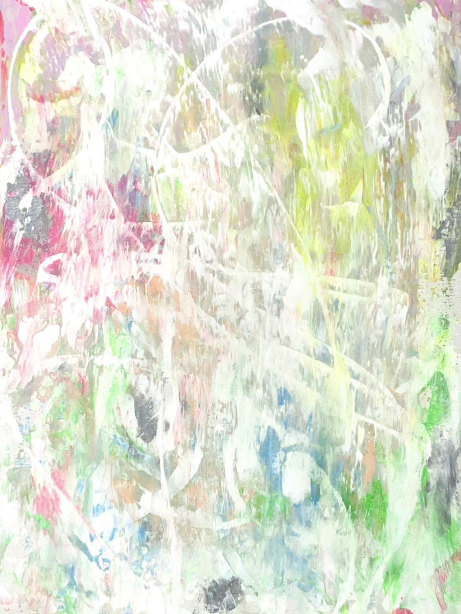
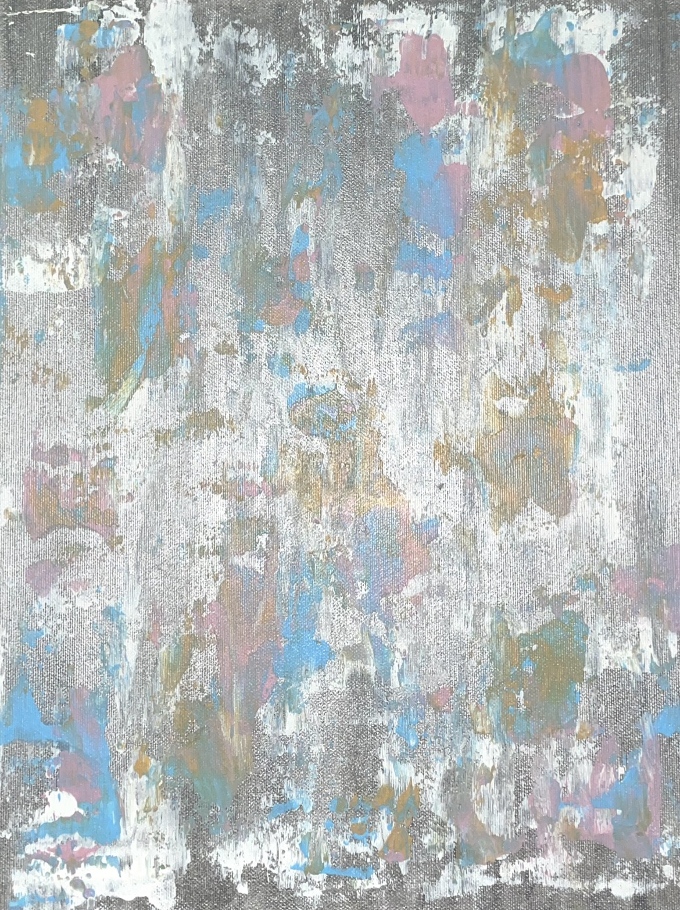

Malerei

Bild 1 - Acryl auf Leinwand

Bild 2 - Aquarell
Hier findest du eine Auswahl meiner künstlerischen Arbeiten. Jedes Bild erzählt eine eigene Geschichte und ist ein Ausdruck meiner Kreativität und Leidenschaft für die Malerei.
Ich arbeite hauptsächlich mit Acryl und Aquarell, aber ich liebe es auch, neue Techniken auszuprobieren. Die Natur und meine Umgebung sind meine größten Inspirationsquellen.